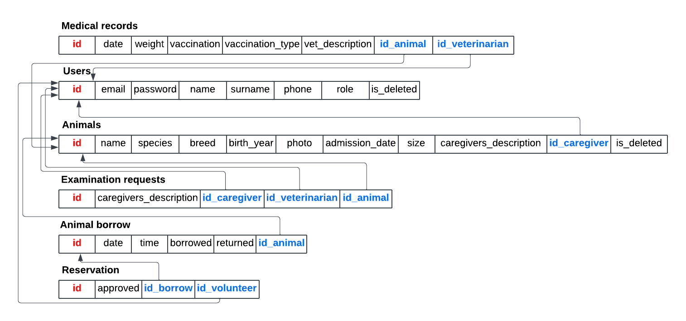

Pro testování mù¾ete pou¾ít následující u¾ivatele:
| Login | Heslo | Role |
|---|---|---|
| admin@admin.com | admin123 | Administrátor |
| caregiver@example.com | caregiver123 | Peèovatel |
| vet@example.com | vet123 | Veterináø |
| volunteer@example.com | volunteer123 | Ovìøený dobrovolník |
| unverified@example.com | unverified123 | Neovìøený dobrovolník |
Pøilo¾te odkaz na komentované video demostrující pou¾ití informaèního systému. Zamìøte se na pøípady u¾ití definované zadáním (napø. registrace u¾ivatele, správa u¾ivatelù a èinnosti jednotlivých rolí). Video nahrajte napøíklad na VUT Google Drive, kde ho bude mo¾né pøímo spustit z odkazu.
Informaèní systém 'Zvíøecí útulek' je implementován pomocí kombinace frameworkù umo¾òujících modulární architekturu. Interaktivní u¾ivatelské elementy na¹eho systému jsou napsány v HTML obohaceného o stylování za pou¾ití frameworku Tailwind CSS. Tyto elementy obsluhuje kontrolerová vrstva postavena ve frameworku Vue.js. Vue.js pak pomocí REST API vysílá po¾adavky, které jsou zpracovány webovým rámcem FastAPI v jazyce Python. Kombinace Vue.js a Python tak tvoøí aplikaèní vrstvu na¹eho systému. Databáze systému je postavena na PostgreSQL, pøièem¾ objektovì-relaèní model je abstrahován pomocí knihovny SQLAlchemy. Vyu¾ití této knihovny pøípadnì umo¾òuje snadnou migraci na jiný databázový systém, napø. MySQL.
Systém je tvoøen nìkolika stránkami doplnìnými o prvky a modulární komponenty, které jsou u¾ivatelùm zpøístupnìny podle jejich oprávnìní.
U¾ivatel je nejprve pøivítán hlavní obrazovkou. Na základì pøedchozí bì¾ící relace je pøímo pøihlá¹en a mù¾e pokraèovat v operacích na základì vlastních práv, pøípadnì je systémem rozpoznán jako neregistrovaný u¾ivatel.
Nehledì na práva si pak tento u¾ivatel mù¾e zobrazit ve¹kerá zvíøata, která jsou aktuálnì v útulku, pomocí prokliku na "View All Animals". View All Animals po¹le po¾adavek na zobrazení v¹ech zvíøat aktuálnì se nacházejících v útulku. U¾ivatel pak dostane základní výèet informací o zvíøeti a mù¾e pøi kliknutí na okénko zvíøete si mù¾e zobrazit jeho detailní popis.
Popis zvíøete je stejný v¹em u¾ivatelùm systému. Co se ale mìní na základì práv, je mno¾ina operací reprezentovaných interaktivními tlaèítky, které nad zvíøetem mù¾ou provést. U¾ivatel bez vytvoøeného úètu dostane upozornìní na mo¾nost venèení pøi tvorbì nového úètu / pøihlá¹ení se. Pøihlá¹ený dobrovolník má mo¾nost si zobrazit rozvrh zvíøete a pøípadnì si vytvoøit rezervaci venèení. Peèovatel si pak mù¾e zobrazit rozvrh zvíøete a pøidat mu temríny venèení, podat ¾ádost na veterináøe na vy¹etøení zvíøete, editovat informace o zvíøeti nebo si zobrazit jeho zdravotní záznamy. Veterináø pak má mo¾nost dostat se ke zdravotním kartám zvíøete nebo si zobrazit v¹echny zdravotní záznamy. Administrátor dostává kombinaci práv peèovatele a veterináøe.
Dal¹í mo¾ností, která se nabízí ji¾ z hlavní nabídky je pøihlá¹ení u¾ivatele. U¾ivateli se zobrazí formuláø, který, kdy¾ je opatøen údaji korelujícími se záznamem u¾ivatele v databázi, provede pøihlá¹ení u¾ivatele do systému. U¾ivatel se z této nabídky té¾ mù¾e dostat k registraènímu formuláøi, pokud si tvoøí nový úèet. Oba formuláøe jsou opatøeny kontrolami správného formátu vstupu. Heslo je pøi ukládání do databáze podrobeno hashování, co¾ znamená, ¾e do databáze se ukládá pouze hash hesla (vypoèítaný pomocí knihovny bcrypt), nikoli heslo samotné. Samotný hash má 60 znakù a pøi jeho tvorbì je navíc vyu¾ito "soli", co¾ je dal¹í mechanismus zvy¹ující bezpeènost hashe (napø. dva u¾ivatelé se stejným heslem nebudou mít stejný hash).
Peèovatel eviduje novì pøijaté zvíøata do útulku v sekci 'Add Animal'. Zde musí vyplnit jméno a druh zvíøete, dále mù¾e pøidat informace jako jsou rasa, velikost, rok narození, pøidat popis a zároveò i fotku zvíøete.
Rozvrh zvíøete je realizovaný pomocí týdenního zobrazení hodin s interaktivními okénky, je¾ na základì rùzného zbarvení (popsaného v legendì pod samotným rozvrhem) u¾ivatele informují o èasové obsazenosti zvíøete. Ovìøený u¾ivatel má mo¾nost si podat ¾ádost o rezervaci na okénka s volnými termíny, zobrazit si vlastní rezervace a pøípadnì provést jejich zru¹ení. Peèovatel mù¾e vytvoøit nové volné termíny pro venèení, zobrazit si rezervace a pøes proklik nahlédnout na detail u¾ivatele, který rezervaci podal. Pøedev¹ím v¹ak provádí potvrzení nebo zru¹ení dané rezervace. Informace o nadcházejících i probìhlých rezervacích pro ve¹kerá zvíøata si u¾ivatel mù¾e zobrazit na stránce 'My Reservations' a peèovatel na stránce 'Reservations'. V této nabídce je peèovateli umo¾nìno si do systému poznamenat zda bylo zvíøe vydané dobrovolníkovi a zda bylo následnì navráceno.
Podobnì jako nabídka s detaily zvíøete, tak také u¾ivatelé disponují oknem, které shrnuje jejich údaje. Dále má ka¾dý u¾ivatel pøístup do okna 'My Profile', kde si mù¾e doplnit telefonní èíslo, nebo zmìnit heslo. Peèovatele a veterináøe mù¾e do systému pøidávat pouze administrátor. Peèovatelé pak mohou pøidávat dobrovolníky, které zároveò ovìøují a udìlují jim tak práva vytváøet rezervace venèení.
Pro zvíøata mohou peèovatelé vytvoøit po¾adavky na kontrolu èi o¹etøení veterináøem. Veterináøùm se pak zobrazí v prokliku pøes akci 'Examination requests' tento po¾adavek. Jakýkoli veterináø pak mù¾e na tento po¾adavek zareagovat pøidáním zdravotního záznamu zvíøeti do systému s popisem prohlídky, uvedením výsledku vá¾ení a pøípadným popisem vakcinace.
V pøípadì odstranìní zvíøete nebo u¾ivatele ze systému se provede tzv. soft-delete. U polo¾ek si pak ukládáme status smazání, aèkoli k fyzickému odstranìní záznamu z databáze nedojde. Díky tomu si zamìstnanci útulku i dobrovolníci mohou stále zobrazovat historii ve¹kerých interakcí.
Informaèní systém nepou¾ívá stavová sezení, tedy pøi interakci mezi klientem a serverem si server ¾ádný token neukládá a ani se neposílá v rámci Cookies. Místo sezení je pou¾it mechanismus JWT tokenù, který je bezstavový a token je reprezentován jako JSON objekt. Tento token je u¾ivateli vytvoøen pøi jeho pøihlá¹ení do systému a obsahuje infomace jako je jeho identifikaèní èíslo, role a platnost tokenu. Token je ulo¾en v jeho prohlí¾eèi (localStorage). Následnì pøi ka¾dém dotazu na server klient posílá tento token v hlavièce HTTP protokolu (Authorization: Bearer TOKEN), slovo bearer znaèí, ¾e server pou¾ije klientùv token k ovìøení. Server zkontroluje, zdali je token vytvoøený serverem (porovná podepsanou èást tokenu se svým klíèem) a pøípadnì jeho platnost (token expiruje po 10 minutách neèinnosti). Pøi po¾adavku mù¾e také dojít k ovìøení role u¾ivatele, pokud je to zapotøebí pro provedení dané akce. Po odhlá¹ení klienta ze systému je token z prohlí¾eèe smazán a u¾ivatel je pøesmìrován na úvodní stránku.
Výèet use casù a odpovídající Vue soubory:
Návrh databáze (ERD):

Schéma relaèní databáze (tabulky v databázi):
Informaèní systém jsme nasadili na plaformu Render.com, co¾ je poskytovatel cloudového hostování, který pro omezené pou¾ití bezplatnì poskytuje nasazení aplikace v cloudu. Podporuje rùzné technologie, co¾ nám umo¾nilo zde nasadit v¹echny èásti na¹eho informaèního systému. Frontend i backend jsou zde nasazeny jako samostatné slu¾by, tøetí slu¾bou pak je databáze PostgreSQL, která bude dostupná do 19. prosince 2024.
Pro úèely vývoje a lokálního pou¾ití byl nasazen nástroj Docker Compose, který umo¾nil efektivní správu více kontejnerù v rámci jednoho konzistentního prostøedí. Tento nástroj nám usnadnil integraci slu¾eb, vèetnì jednoduchého nasazení PostgreSQL databáze prostøednictvím Docker image.
Ke spu¹tìní aplikace je tøeba mít nainstalovaný Docker Desktop, který zahrnuje pøíkaz docker compose (pøípadnì docker-compose).
V koøenovém adresáøi projektu staèí spustit pøíkaz
docker compose up --build
Ten stáhne potøebné závislosti, vytvoøí a spustí kontejnery s aplikací.
Zároveò se vytvoøí databázové schéma. Pro naplnìní databáze ukázkovými daty je tøeba spustit skript docker exec -it backend python3 /app/example_data.py
Dojde k vytvoøení demonstraèních u¾ivatelských úètù, ale pøedev¹ím se vytvoøí úèet admina (pøihla¹ovací údaje uvedeny vý¹e).
Na adrese localhost:8080 pak bude dostupné u¾ivatelské rozhraní.
XDD VTIPALCI SI MYSLI ZE MAME NEJAKE CHYBY.